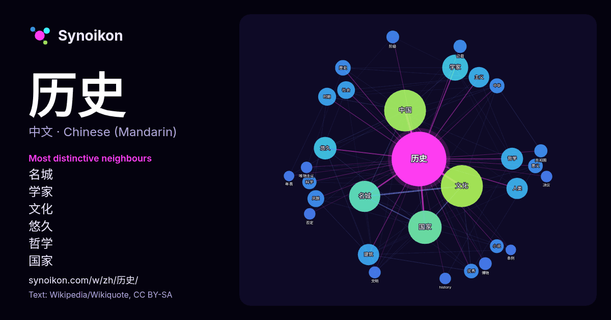

中文 · 热门词
历史
“history” · 来自维基百科, Wikiquote 1380 次出现中其周围的词。

最具特色的邻近词
- 名城 87×
- 学家 49×
- 文化 46×
- 悠久 44×
- 哲学 37×
- 国家 29×
- 中国 28×
- 人类 28×
- 风貌 27×
- 主义 19×
- 优秀 18×
- 时期 17×
- 意义 17×
- 建筑 16×
- 阶级 14×
- 小说 14×
- 唯物主义 14×
- 中华 14×
- history 13×
- 社会 13×
× = 比维基百科普通文本中多出的倍数。
最常见的邻近词
- 文化 175
- 中国 173
- 国家 111
- 名城 96
- 学家 67
- 悠久 51
- 哲学 48
- 研究 46
- 人类 45
- 建筑 45
- 主义 42
- 美国 34
- 世界 33
- 时期 32
- 社会 31
- 风貌 28
- 人民 27
- 城市 24
- 歷史 24
- 具有 23
上下文
- 历史是对过去的系统研究。作为一门学科，历史分析和解释证据，构建关于发生的事情的叙述并解释其发生的原因，主要关注人类历史。一些理论家将历史归类为社会科学，而另一些人则将其视为人文学科的一部分或认为它是一门混合学科。围绕历史的目的也存在类似的争论——例如，它的主要目的是理论性的（揭示真理），还是实践性的 Wikipedia snippets · 历史
- 中國歷史是今日泛称“中國”或“中华”地區内数千年文明与社会演进的历史，涵盖史前发展、政权分合、疆域变迁、族群互动、经济社会演變以及近现代国家建构。傳統史学多以黃河流域的中原王朝為叙事中心；近现代考古與史学研究则表明，中華文明並非單一起源，而是在黃河、長江、西遼河、江漢、海岱、巴蜀、嶺南等諸多区域文化长期交流、整合的过程中逐渐形成。 Wikipedia snippets · 中国历史
- Baronet，1771年8月15日—1832年9月21日），18世紀末苏格兰小说家、诗人、剧作家和历史学家，著有《艾凡赫》《威弗莱》《肯纳尔沃思堡》等小说。他是浪漫主义的代表人物之一，影响了欧美文学的发展。司各特也是历史小说体裁的创始人。 司各特出生在爱丁堡牛门附近一个小巷里，是家中老九，但他的兄弟中有六人 Wikipedia snippets · 沃尔特·司各特
- 背靠燕山，毗邻天津市、河北省，为京津冀城市群的重要组成部分之一。 北京是拥有三千余年建城历史、八百六十余年建都史的历史文化名城。辽、金、元、明、清五个朝代在此定都。北京荟萃了自元明清以来的中华文化，拥有众多历史名胜古迹和人文景观，包括不可移动文物3840处，全国重点文物保护单位135处，8项世界遗 Wikipedia snippets · 北京市
- 中华人民共和国历史始于公元1949年10月1日在北京举行的开国大典，先后制定并通过了《共同纲领》、《五四宪法》、《七五宪法》、《七八宪法》、《八二宪法》五部宪制性文件。截至2024年，中华人民共和国共经历了毛泽东、邓小平、江泽民、胡锦涛和习近平五位最高领导人，而华国锋曾担任两年过渡时期的领导人。截止 Wikipedia snippets · 中华人民共和国历史
- 文化大革命，简称文革，全称无产阶级文化大革命，是中华人民共和国历史上一场由时任中国共产党中央委员会主席毛泽东发动和领导的全国性政治运动，于1966年5月16日至1976年10月发生在中国大陆境内。各方对文革发动的目的存在不同看法，但一般认为其正式开始于1966年5月16日出台的《五一六通知》，普遍认 Wikipedia snippets · 文化大革命
- 根据马克思对历史、社会和政治经济学的批判，人类社会的发展是通过阶级斗争实现的。在资本主义生产方式下，这种斗争表现为统治阶级（即资产阶级）与工人阶级（即无产阶级）之间的冲突——前者掌握生产资料，后者通过出卖劳动力换取工资，从而维持生产的运作。马克思借助历史 Wikipedia snippets · 卡尔·马克思
- Empire）是由英國歷史學家愛德華·吉本所著的关于罗马帝国的历史巨著，被認為是第一部“現代”歷史著作，共有六卷，分期出版。第一卷出版於1776年，第二、三卷出版於1781年，第四、五、六卷出版於1788年。全书涵盖从98年到1590年的羅馬帝國的全部歷史。 當時考古學尚不發達，所有的歷史學家都是依賴於文獻 Wikipedia snippets · 罗马帝国衰亡史
更多词
于 2026-10-09 以默认设置预先计算（±5 个词，中等语料）。交互式图可用实时数据刷新。
界面为机器翻译，欢迎指正。